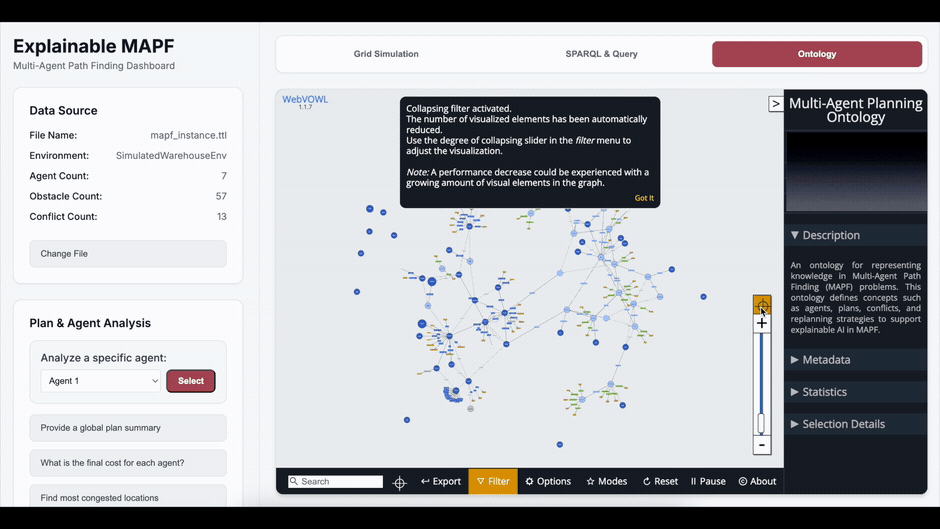

maPO · OMEGA Demo · 3 of 3
Browse the Knowledge Graph

Grid Simulation
Plan & Agent Analysis
Ontology
See the schema liveClasses & object properties of maPO, laid out as an interactive graph.
Drag, filter, zoomExplore how agents, conflicts & sub-plans connect — the same graph the queries run over.
AgentCollisionEventJointPlanPROV-O